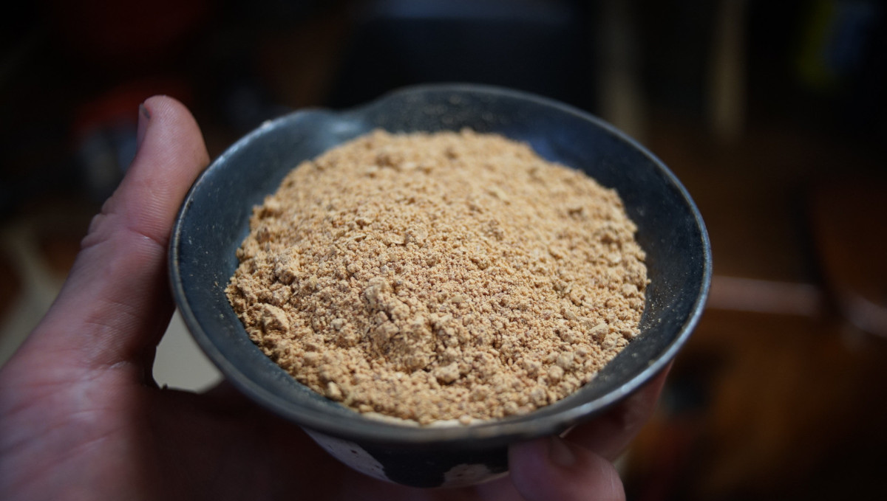
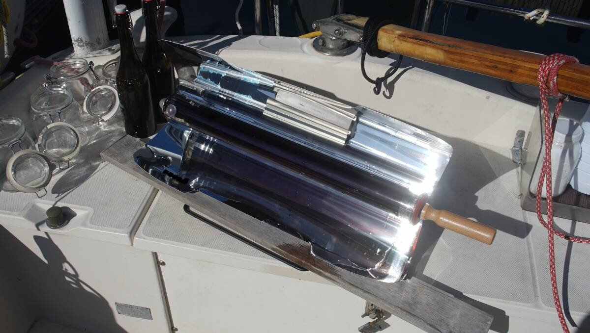
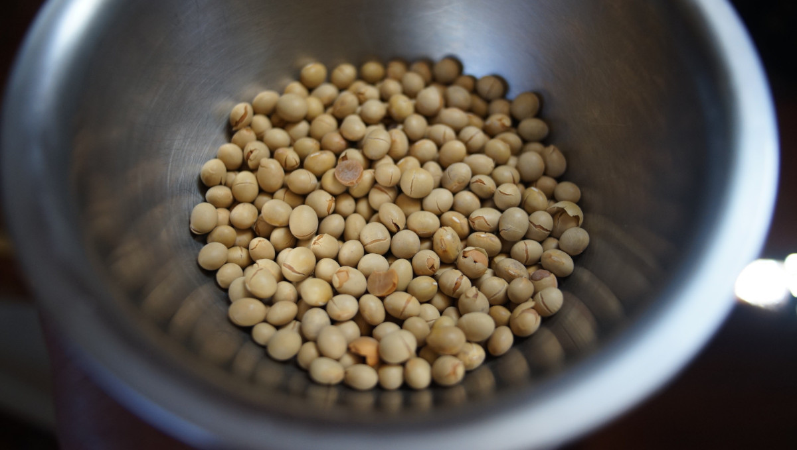
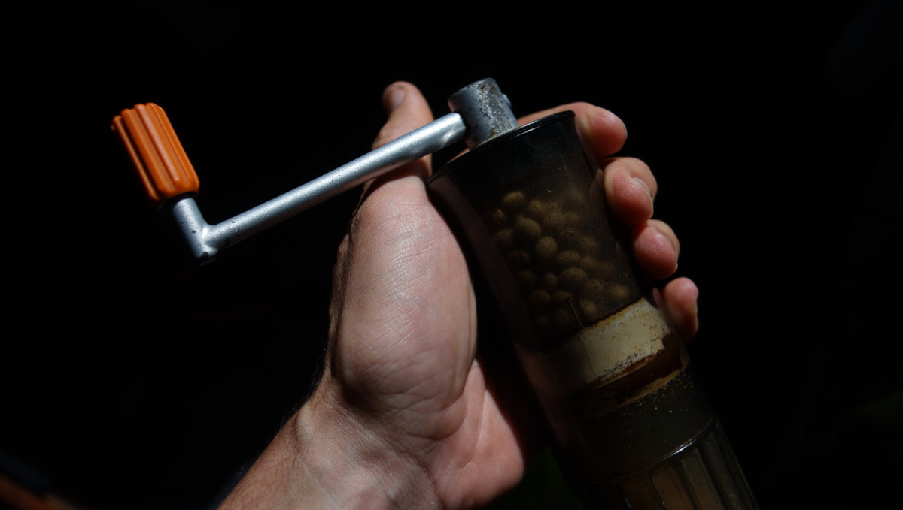

solar roasted kinako
185 g — 30 minutes

In the summer on the boat, we don't drink soy milk because it doesn't keep(we don't have a fridge). In the winter we add soymilk to our morning oatmeal so we stay full longer. We've been wondering what we can add as an alternative in the summer, this year we had an idea: what about kinako?
Kinako(golden flour) is roasted soybean flour. Both of us love kinako, we ate it often when living in Japan. It is nutty, tasty and because it's soy, there's some protein in it(although, it is important to note that it isn't as bioavailable as cooked soybeans), which makes it a good summer-time add-on to morning oatmeal when we don't have access to soymilk.
Kinako is hard to source here in B.C. Canada, but it is possible to find soybeans. Once you have beans, the next step is to roast them.

We don't have an oven at home, but in the summer we use our solar cooker to roast, steam and bake. We have a solar-evacuated tube(pictured above), which concentrates the heat and cooks food with the sun very fast on sunny days.
Note that it's possible to cook this using a regular oven, we provided instructions for both(thank you Marc Matsumoto for the instructions for the oven version). Evidently, we did not invent kinako, but it's a reminder that it's possible to make at home.
 soy beans135 g (3/4 cup)
soy beans135 g (3/4 cup)
roast
- Place 135 g(3/4 cup) of dry soybeans in the tray of the solar-cooker. Or if you have an oven, spread the beans on a baking tray and preheat the oven to 180°C (355°F).
- Solar-roasting time varies depending on local conditions, but it if it's sunny it shouldn't take longer than 30 minutes. Check the beans often to make sure they don't burn. When the beans start to smell nutty, open the tray and shake the beans a little so they roast evenly. When ready, the outer skin of the beans will split and the inside will turn a golden color. Note that the outside will not brown as much as the insides. The browner the bean, the nuttier the kinako. If using an oven, roast for 10-15 minutes, shaking halfway to make sure they're evenly roasted.
- Transfer the roasted beans into a bowl, let cool.

- Once cooled off, grind the beans(skins and all) into a fine powder. We use our hand coffee grinder to do it. Roasted beans are more brittle, therefore easy to grind.

- Keep in a cool dry place, sprinkle over desserts, or spoon into morning oatmeal.